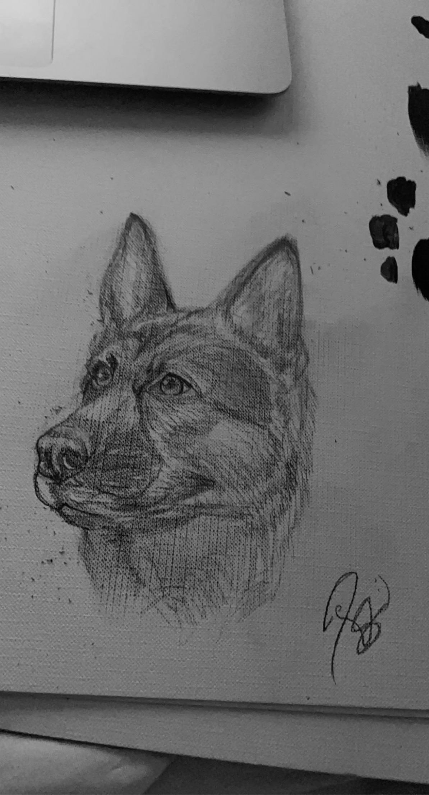
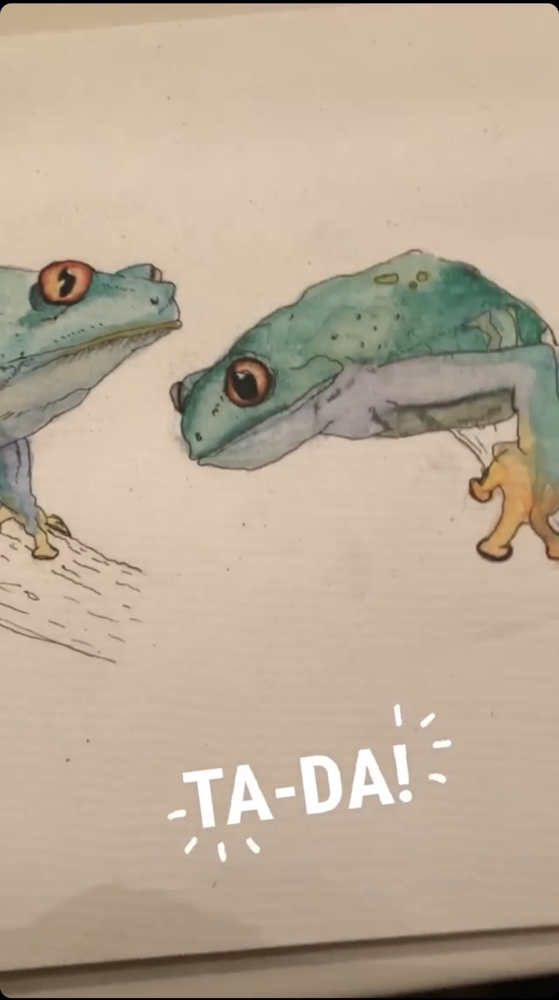
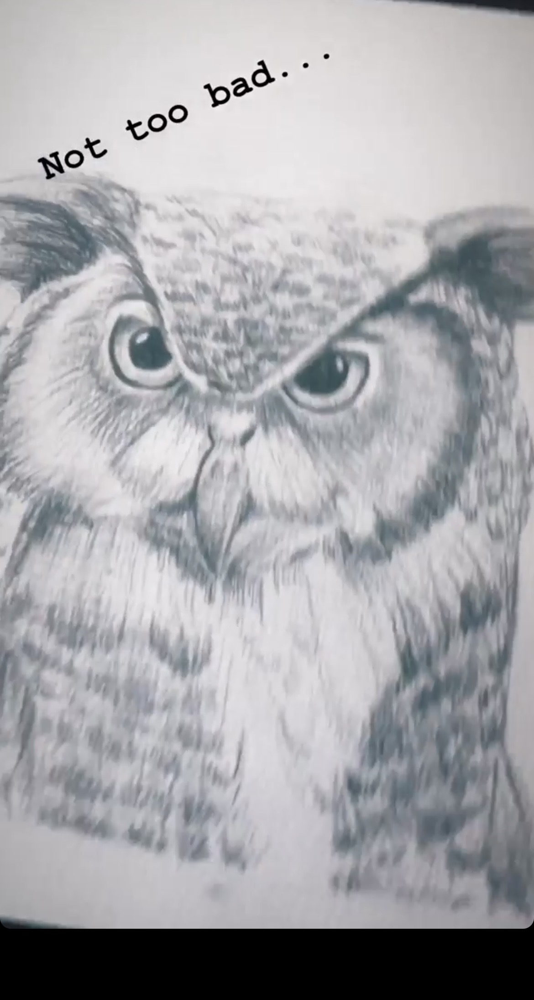
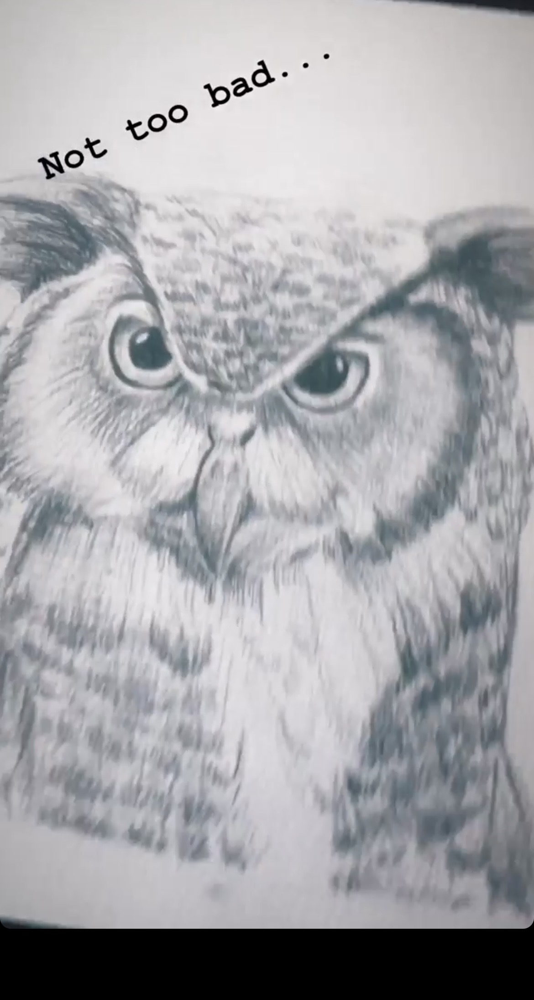
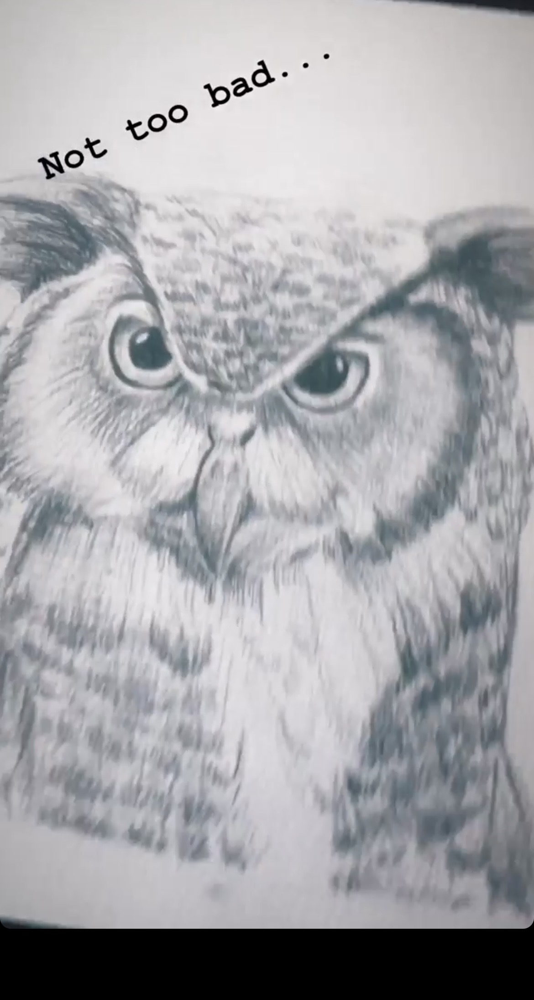

Ravynn Servio
Hi! My name is Ravynn Nicole and I am a first year studio art major at the University of California Riverside. I am skilled in illustration and dance part time with previous experience in high school classes and teams. I am currently working for Instacart and attending school full time. My overall goal is to become an Art Director and create a company that promotes difference and embraces diversity. I value hard work and trust with anyone I work with. I'm always punctual but can also think on the whim. Besides being ambitious, outside of school I am a loud, funny, but also introverted person.
My interest in illustration and dance started when I was very young. From creating dance routines in my grandparents backyard to watching drawing tutorials on youtube, I was always very creatively driven. Even having this passion for the arts was not always easy. Plenty of people have got into my head about if I was sure this is what I wanted to do. Stepping into the entertainment field, it is not always highlighted as something sturdy and well paid so people question why don't I do something in math or become a doctor and go into the science field. Even with these comments nothing could pull me away from drawing. I looked at dance and photography as more hobbies than anything. My junior and senior year of high school I joined the dance and hip hop team respectively. I took photos of my friends part time but never took it seriously. Even though I could create an actual job from these interests, I wanted to separate work and fun.
This has made me research different career paths I could go into with my skills. Living in California allows me to be within reach to Los Angeles and a big creative hub. The market is very competitive but I’m hoping to get my name in the lights one day. I know my talents will get me to where I want to be. I am focused and highly organized. I rarely ever procrastinate and always make schedules to make sure I stay on track. Falling out of my schedule is not a big problem either. I make sure to adapt and rearrange for whatever is needed. I usually work by myself because I know I can count on me to get it done. This also allows the project I am working on to be a complete reflection of what I originally thought of in my head. I prefer to lead but can also be a team player. I communicate effectively and quickly respond to emails sent my way. I make sure not to waste any time when it comes to getting things done.
Work and play creates a huge need for balance in my life. I realize when I need to step away and do not overdo it. My friends would describe me as fun and caring especially when it comes to people and interests I love. This shows that I put my whole heart into not only work but friendships. Working will never be an issue for mine as I go into my field of passion. I can’t wait to make original content and create my mark on the world.
Experience
LGBT+ Club Secretary
• Organized Meetings
• Kept track of previous discussions
• Arranged presentations
Instacart
• Shopped for customers orders
• Deliver groceries and others to corresponding residents
Teaching Assistant
• Ran sessions while teacher was busy
• Reviewed and graded student assignments
• Delivered mail across campus
• TA'd for over 30 students
Education
University of California Riverside
Portfolio


 

